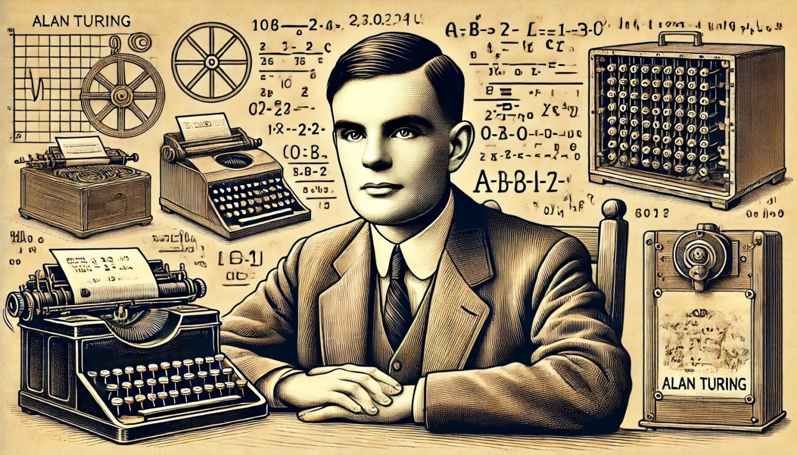
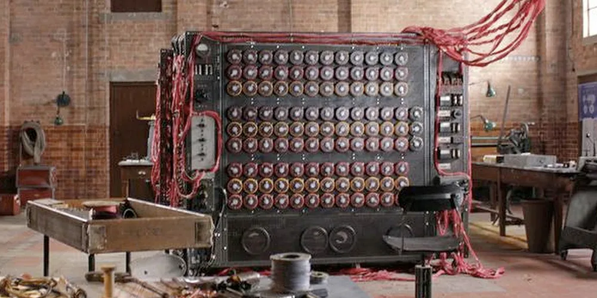
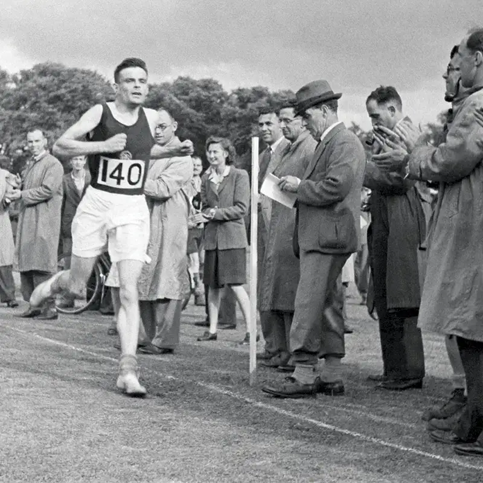

Alan Mathison Turing (Londres, 23 de junho de 1912 – Wilmslow, Cheshire, 7 de junho de 1954) foi um matemático,[1] cientista da computação, lógico, criptoanalista, filósofo e biólogo teórico britânico. Turing foi altamente influente no desenvolvimento da moderna ciência da computação teórica, proporcionando uma formalização dos conceitos de algoritmo e computação com a máquina de Turing, que pode ser considerada um modelo de um computador de uso geral.[2][3][4] Ele é amplamente considerado o pai da ciência da computação teórica e da inteligência artificial.[5] Apesar dessas realizações ele nunca foi totalmente reconhecido em seu país de origem durante sua vida por ser homossexual e porque grande parte de seu trabalho foi coberto pela Lei de Segredos Oficiais. float. Dessa forma, o texto ocupa automaticamente o espaço disponível ao lado da imagem.
Na Segunda Guerra, mensagens criptografadas guiavam operações navais e logísticas. A Enigma era uma máquina eletromecânica que produzia cifras complexas por meio de rotores e um painel de conexões. Os aliados precisavam interceptar e entender essas comunicações para antecipar movimentos. A tarefa exigia mais do que força bruta; precisava de insight matemático e engenharia aplicada. O esforço de decodificação logo concentrou-se em centros de trabalho onde matemáticos, engenheiros e linguistas colaboravam. E foi aí que Alan Turing e Máquina Enigma Segunda Guerra decodificação se tornaram inseparáveis na narrativa técnica.

Legado O trabalho de Turing com a Enigma não apenas teve impacto militar, mas também inspirou o desenvolvimento da ciência da computação moderna e da inteligência artificial, consolidando seu papel como um dos maiores matemáticos e criptoanalistas do século XX (). A complexidade da Enigma e a genialidade de Turing continuam a influenciar a criptografia e a segurança digital até hoje float: right.
Impacto da Decifração A quebra do código da Enigma permitiu aos Aliados interceptar informações estratégicas cruciais, influenciando batalhas importantes, como a Batalha do Atlântico, e contribuindo para encurtar a guerra na Europa em mais de dois anos, salvando milhões de vidas (). É importante notar que o trabalho de Turing foi colaborativo, envolvendo diversas equipes em Bletchley Park, e que ele não tomava decisões militares sobre o uso das informações obtidas

Turing foi processado judicialmente em 1952 por atos homossexuais: a Emenda Labouchere de 1885 determinara que "atentado ao pudor" era uma ofensa criminal no Reino Unido. Ele aceitou o tratamento de castração química, com dietilestilbestrol, como alternativa à prisão. Turing morreu em 1954, 16 dias antes de seu 42º aniversário, por envenenamento por cianeto. Um inquérito determinou sua morte como suicídio, mas se observou que a evidência conhecida também é consistente com envenenamento acidental. Em 2009, após uma campanha na Internet, o primeiro-ministro britânico Gordon Brown fez um pedido de desculpas público e oficial a Turing em nome do governo britânico pela "maneira terrível como foi tratado". A rainha Elizabeth II concedeu a Turing um perdão póstumo em 2013. A "lei Alan Turing" é agora um termo informal para uma lei britânica de 2017 que retroativamente perdoou homens advertidos ou condenados sob a legislação histórica que proibia atos homossexuaisTuring foi processado judicialmente em 1952 por atos homossexuais: a Emenda Labouchere de 1885 determinara que "atentado ao pudor" era uma ofensa criminal no Reino Unido. Ele aceitou o tratamento de castração química, com dietilestilbestrol, como alternativa à prisão. Turing morreu em 1954, 16 dias antes de seu 42º aniversário, por envenenamento por cianeto. Um inquérito determinou sua morte como suicídio, mas se observou que a evidência conhecida também é consistente com envenenamento acidental. Em 2009, após uma campanha na Internet, o primeiro-ministro britânico Gordon Brown fez um pedido de desculpas público e oficial a Turing em nome do governo britânico pela "maneira terrível como foi tratado". A rainha Elizabeth II concedeu a Turing um perdão póstumo em 2013. A "lei Alan Turing" é agora um termo informal para uma lei britânica de 2017 que retroativamente perdoou homens advertidos ou condenados sob a legislação histórica que proibia atos homossexuais
Interesses e Hobbies. Além da matemática, Turing era um atleta dedicado, praticando corrida e participando de maratonas, chegando a competir nas eliminatórias para as Olimpíadas de 1948. Também tinha hábitos peculiares, como usar máscara de gás durante pedaladas e acorrentar sua caneca de chá no trabalho, demonstrando seu caráter meticuloso e excêntrico.